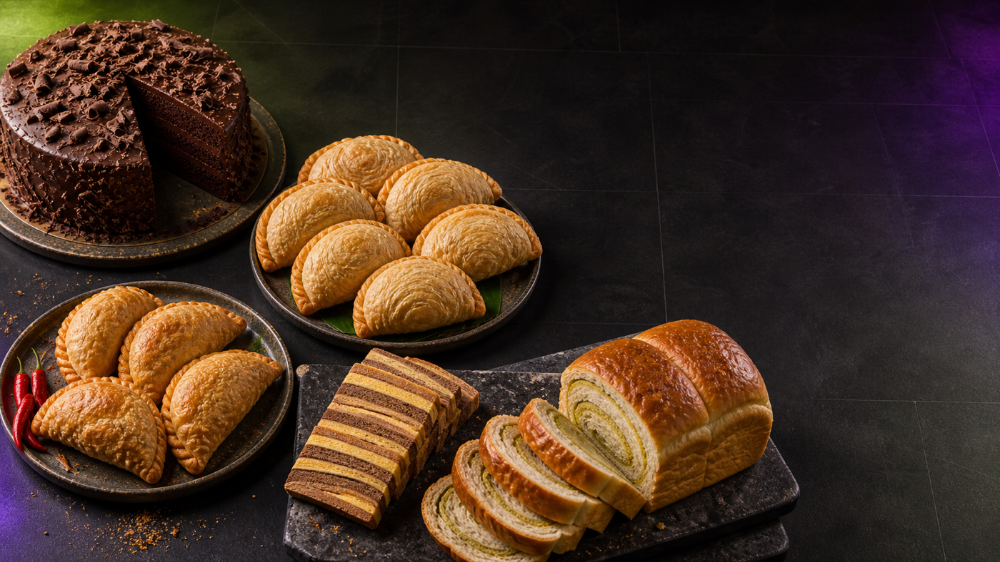

Start with what the customer said.
Look for
Items · note · pickup
Kaya Puff has no quantity. That is a business question the system must handle without inventing a piece count.
She takes bakery orders on WhatsApp.

Kaya Puff has no quantity. That is a business question the system must handle without inventing a piece count.
Kaya Puff is sold by the half-dozen. The unnumbered order therefore means one half-dozen pack—not one individual piece.
| Item | Selling unit | Price | Order |
|---|---|---|---|
| Kek Coklat | Each | RM45 | 2 × RM45 = RM90 |
| Kaya Puff | ½ dozen | RM12 | 1 × RM12 = RM12 |
| Kek Lapis | Each | RM60 | 1 × RM60 = RM60 |
Keep the sugar note. Keep pickup “esok petang.” Make no delivery or timing promise.
Switch to the app. Run the reference input once. Watch before diagnosing.
Did it understand the order?
Is the total RM162?
Did every required fact survive?
Did it invent any promise?
Don’t fix first.
Understand first.
Turn messy language into an order.
Define selling units and prices.
Calculate money and preserve facts.
Say only what the business knows.
Explain this project to me like I am completely new. What are the main parts?
Trace what happens from the customer message to the final reply. Show each step in order.
Before changing anything, where can this go wrong, what assumptions are made, and what should we test?
The Kaya Puff note and pickup request are still attached to the order.
export const UNDERSTANDING_BROKEN_PROMPTS = {
"extract-broken": (input) => `Extract this bakery order: ${input}`,
};Say what held. Keep this responsibility visible and continue.
Strengthen the order shape and business rule. Change one thing, then rerun.
No model result yet. Run the bot before judging.
The result matches the menu and the one-selling-unit rule.
export async function priceBroken(order, complete) {
return { ok: false, chatResponse: await complete( "price-broken", JSON.stringify(order)) };
}Confirm the number against the menu. Continue without inventing a fault.
Move menu lookup and arithmetic into code. Change one thing, then rerun.
Understanding stopped first. Do not judge money yet.
Item lines, total, Kaya Puff note, and pickup request reach the next step.
export async function invoiceBroken(pricedOrder) {
return { ok: false, chatResponse: `Order received.\nTotal: RM${pricedOrder.totalRm}` };
}Name the facts that survived. Continue to the customer promise.
Preserve the complete priced order. Change one thing, then rerun.
An earlier stage stopped. Do not judge the handoff yet.
The reply says pickup was requested and leaves confirmation to Kak Nor.
export async function replyBroken(invoice, complete) {
return { ok: false, chatResponse: await complete( "reply-broken", JSON.stringify(invoice)) };
}Confirm that the reply stayed inside known facts.
Build the reply from validated facts. Change one thing, then rerun.
An earlier stage stopped. Do not judge the promise yet.
Mark each check PASS, NEEDS WORK, or NOT REACHED.
“Actually make Kek Coklat 3. Keep the note and pickup.” Ground truth: RM207.
Understand. Compare. Assign. Test again.